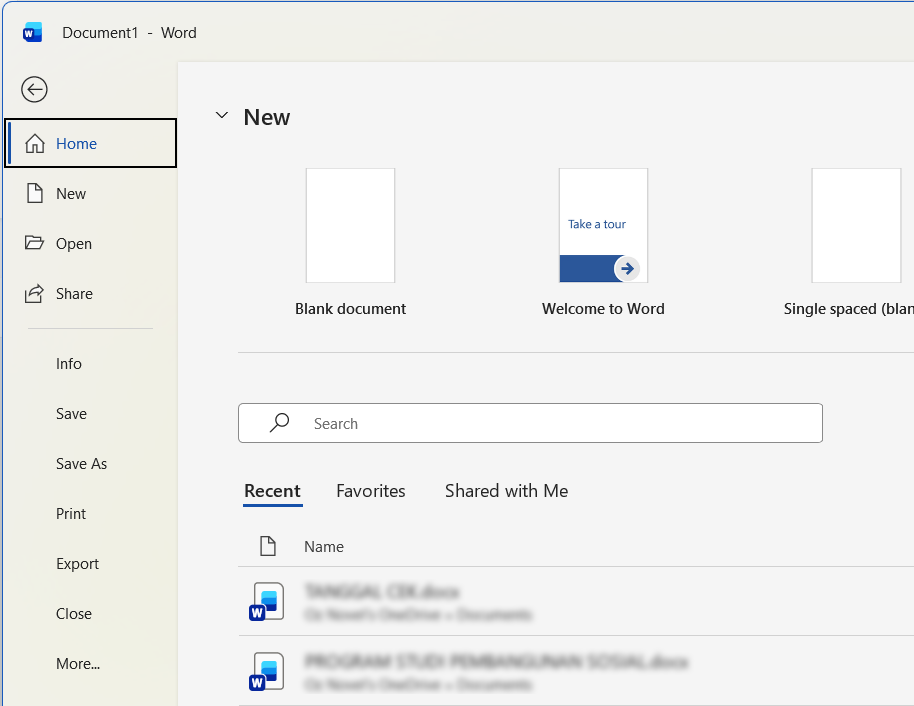
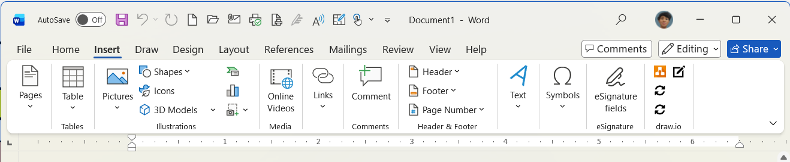
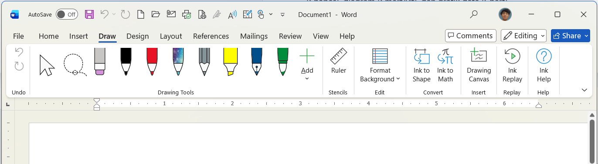
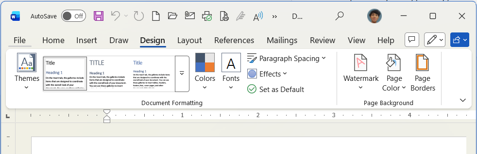
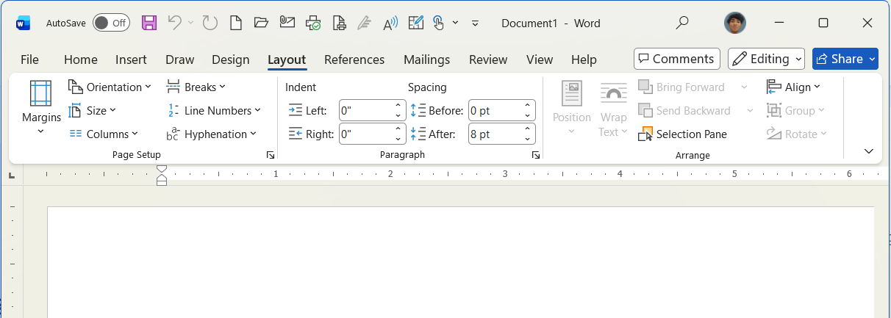
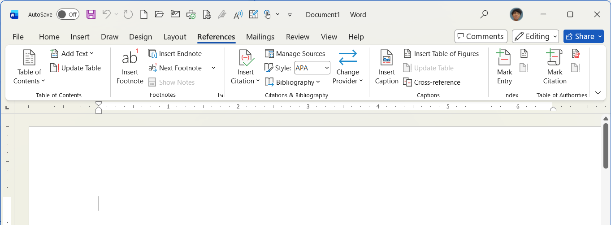
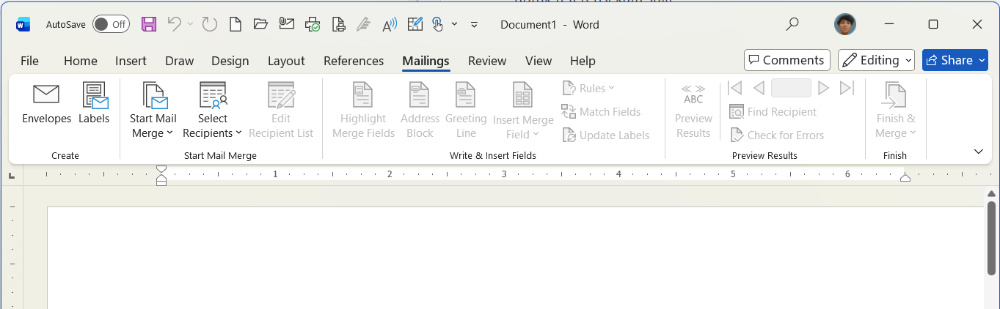
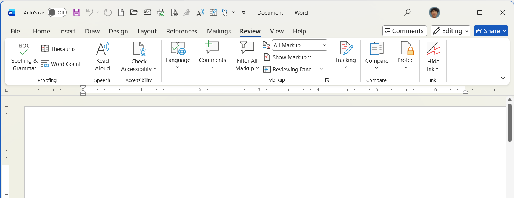
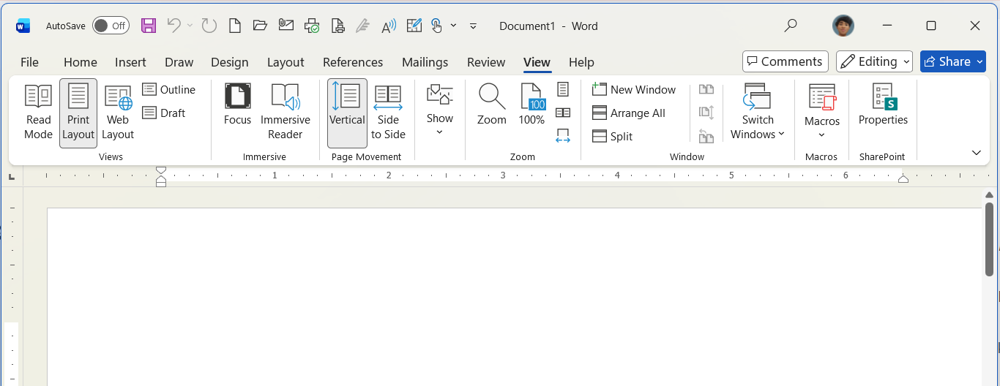

Apa itu Tab Ribbon?
Ribbon adalah area panel utama di bagian atas Microsoft Word yang berisi sekumpulan alat untuk mengedit dokumen. Ribbon ini dibagi menjadi beberapa Tab, dan di dalam setiap tab terdapat Grup Perintah yang dikelompokkan berdasarkan fungsinya masing-masing.
 Gambar 1: Deretan Tab Ribbon dari ujung kiri (File) hingga ujung kanan (Help)
Gambar 1: Deretan Tab Ribbon dari ujung kiri (File) hingga ujung kanan (Help)

1. Tab File
Manajemen Dokumen UtamaTab File sangat unik karena tidak membuka menu di Ribbon, melainkan membuka halaman layar penuh yang disebut Backstage View. Di sini Anda tidak mengedit isi teks, melainkan mengelola file dokumen itu sendiri.
Perintah Utama:
- Info: Melihat informasi detail dokumen (ukuran file, jumlah kata, penulis).
- Save & Save As: Menyimpan dokumen baru atau menyimpannya dengan nama/format lain.
- Print: Mengatur ukuran kertas cetak, memilih printer, dan mencetak dokumen.
- Export: Mengubah dokumen ke format lain secara instan, seperti menjadikan file PDF.

2. Tab Home (Beranda)
Pusat Pemformatan DasarIni adalah tab default yang terbuka pertama kali dan paling sering digunakan. Tab ini berisi semua perintah esensial untuk memformat teks dasar yang Anda ketik.
Grup Perintah Utama:
- Clipboard: Berisi perintah untuk Cut (memotong), Copy (menyalin), dan Paste (menempel).
- Font: Mengubah jenis huruf, ukuran font, menebalkan (Bold), memiringkan (Italic), garis bawah (Underline), dan mengubah warna teks.
- Paragraph: Mengatur perataan teks (kiri, tengah, kanan, rata kiri-kanan), jarak spasi antar baris, serta penomoran berurut (Bullet & Numbering).
- Styles: Menerapkan format Heading (Judul Besar/Sub-judul) secara instan agar struktur dokumen rapi.

3. Tab Insert (Sisipkan)
Memasukkan Objek TambahanGunakan tab ini jika Anda ingin menambahkan sesuatu selain teks ke dalam dokumen Anda, mulai dari halaman kosong baru hingga tabel dan gambar.
Grup Perintah Utama:
- Pages: Menyisipkan halaman sampul (Cover Page) atau halaman kosong baru (Blank Page).
- Tables: Membuat tabel untuk menyajikan data secara terstruktur.
- Illustrations: Menyisipkan gambar dari komputer (Pictures), bentuk geometris (Shapes), diagram (SmartArt), dan grafik data (Chart).
- Header & Footer: Menambahkan catatan berulang di bagian atas (Header) dan bawah (Footer), serta membubuhkan Nomor Halaman (Page Number).

4. Tab Draw (Gambar)
Alat Menggambar BebasSangat cocok bagi Anda yang menggunakan perangkat layar sentuh, tablet, atau alat stylus pen. Anda bisa mencoret-coret dokumen selayaknya kertas asli.
Grup Perintah Utama:
- Drawing Tools: Pilihan koleksi pena, pensil, dan stabilo (Highlighter) dengan berbagai ukuran dan warna, serta alat Penghapus (Eraser).
- Convert: Fitur ajaib Ink to Shape (merapikan coretan menjadi bentuk sempurna seperti lingkaran/persegi) dan Ink to Math (mengubah tulisan tangan rumus matematika menjadi teks digital).

5. Tab Design (Desain)
Estetika Visual DokumenTab ini memfokuskan pada pengaturan estetika keseluruhan dokumen. Anda dapat mengubah tampilan seluruh dokumen hanya dengan satu klik tanpa harus memformat per paragraf.
Grup Perintah Utama:
- Document Formatting: Kumpulan Themes (Tema) yang sudah mengatur kombinasi font, warna, dan spasi yang profesional secara otomatis.
- Page Background: Menambahkan Watermark (tanda air transparan di belakang teks), Page Color (mengubah warna kertas), dan Page Borders (membuat bingkai artistik di pinggiran kertas).

6. Tab Layout (Tata Letak)
Pengaturan Fisik KertasSangat krusial untuk dipahami sebelum dokumen dicetak. Anda harus mengatur ukuran kertas di tab ini agar hasil ketikan tidak terpotong saat diprint.
Grup Perintah Utama:
- Page Setup: Mengatur batas tepi pengetikan (Margins), bentuk kertas berdiri atau memanjang (Orientation), ukuran fisik kertas seperti A4 atau F4 (Size), dan membagi teks koran (Columns).
- Paragraph: Mengatur jarak indentasi (dorongan teks menjorok ke dalam) dan spasi ruang kosong sebelum/sesudah sebuah paragraf.

7. Tab References
Penulisan Ilmiah & AkademikSangat dibutuhkan oleh pelajar, mahasiswa, dan penulis buku yang sedang menyusun makalah, skripsi, jurnal, atau laporan panjang.
Grup Perintah Utama:
- Table of Contents: Membuat Daftar Isi Otomatis yang langsung menyesuaikan nomor halaman.
- Footnotes: Menambahkan Catatan Kaki (Footnote) di bagian bawah halaman untuk referensi kata sulit.
- Citations & Bibliography: Menyisipkan kutipan sumber pustaka dan mencetak Daftar Pustaka secara otomatis.

8. Tab Mailings
Persuratan MassalTab yang berfungsi sebagai generator otomatis. Jika Anda ingin mencetak 1.000 surat dengan nama tujuan yang berbeda-beda, Anda tidak perlu mengetiknya satu per satu, cukup gunakan tab ini.
Grup Perintah Utama:
- Create: Mendesain dan mencetak langsung format Amplop surat dan Label (misal label stiker undangan).
- Start Mail Merge: Memulai mode surat massal dan menyambungkan dokumen Word ini dengan basis data penerima (biasanya berupa file Excel).
- Write & Insert Fields: Menyisipkan variabel atau bidang yang bisa berubah-ubah, seperti "Nama_Peserta" atau "Alamat".

9. Tab Review (Tinjau)
Koreksi & Kolaborasi DokumenTab ini sering digunakan sebelum mempublikasikan dokumen untuk mengecek apakah ada kesalahan ketik, atau saat Anda merevisi dokumen bersama tim/dosen penguji.
Grup Perintah Utama:
- Proofing: Fitur Spelling & Grammar untuk mengecek typo atau kesalahan ejaan, serta Word Count untuk menghitung jumlah total kata dan karakter.
- Language: Menerjemahkan bahasa (Translate) dan mengatur bahasa utama dokumen.
- Comments & Tracking: Menambahkan kotak komentar (Review/Revisi), dan fitur Track Changes yang akan merekam setiap penambahan tulisan atau coretan penghapusan yang dilakukan orang lain di file Anda.

10. Tab View (Tampilan)
Mengatur Tampilan Layar UtamaFokus di tab ini murni untuk kenyamanan mata Anda saat bekerja di depan layar monitor komputer. Perintah di sini tidak memengaruhi hasil akhir cetakan kertas.
Grup Perintah Utama:
- Views: Mengganti mode dokumen, seperti Read Mode (seperti membaca buku e-book), Print Layout (mode standar yang terlihat seperti kertas), atau Web Layout.
- Show: Memunculkan Ruler (penggaris batas tepi), Gridlines (garis bantu kotak-kotak buku streaming), dan panel Navigasi.
- Zoom: Memperbesar (Zoom In) atau memperkecil (Zoom Out) tampilan visual halaman kertas di monitor Anda.